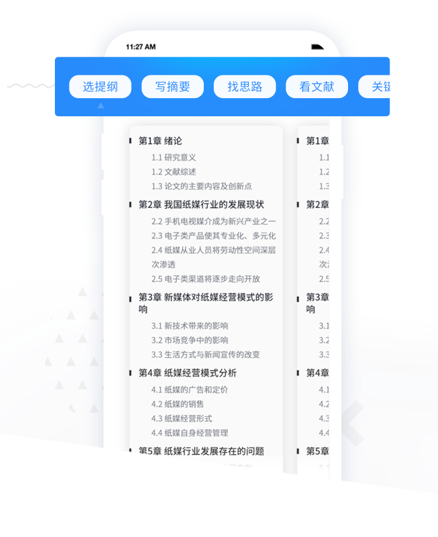
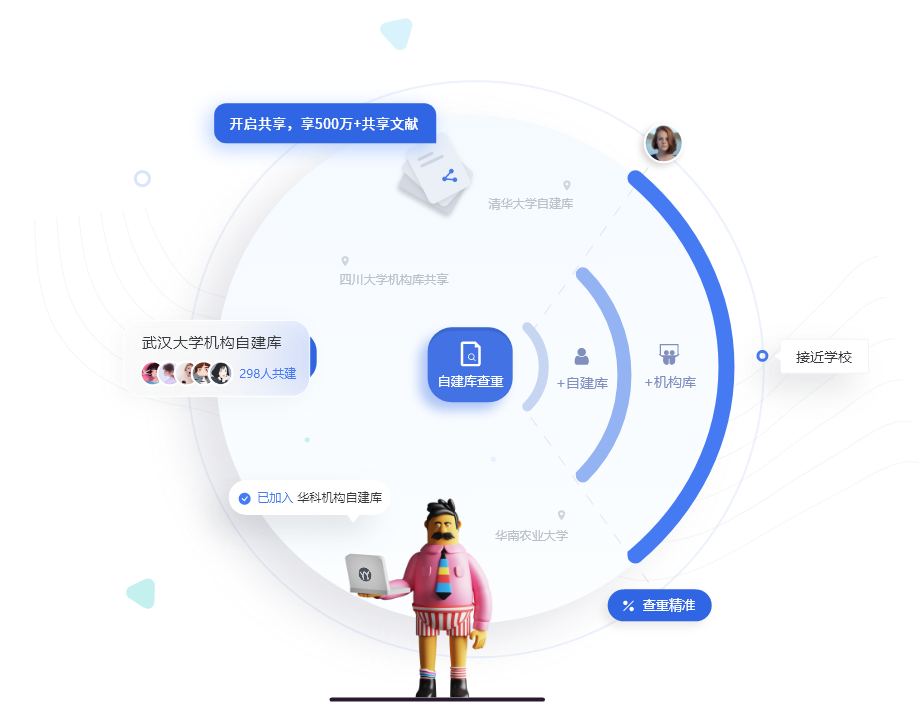
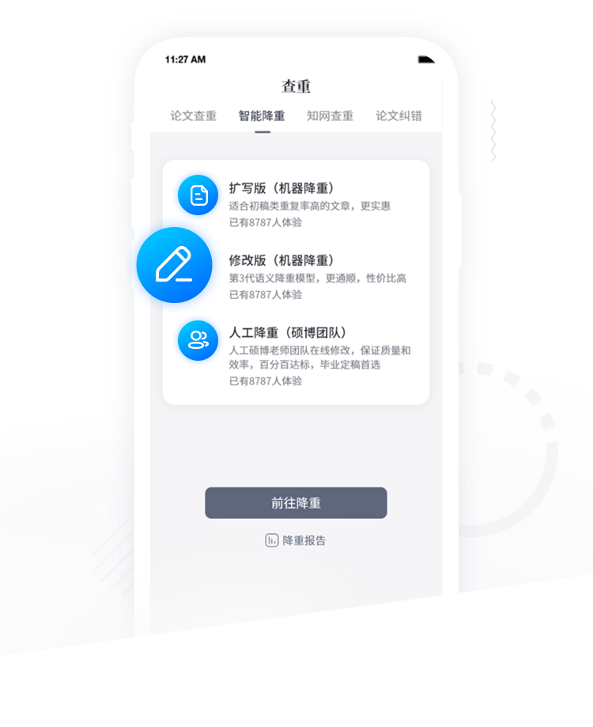

PaperYY 快问快答：查重降重一步到位，共享自建库到底帮了多少忙？
论文改稿季翻出 PaperYY，从自建库到降重通道、多端写作，8 组问题说清它到底值不值得长期用。
整理一篇关于 PaperYY 的快问快答——论文改稿季翻出来用，发现几个之前没注意到的细节，直接用问答方式记下来。
PaperYY 到底是什么？
一句话：它是把查重、降重、写作辅助三件事捏在一块的论文工具平台。
核心能力是论文查重，它的官网把多端检测、共享自建库、智能降重三件事并列核心卖点——500 万+共享自建库、第三代语义降重模型、硕博团队人工降重，还有手机端的论文提纲生成。和市面上只做查重或只做降重的工具不一样，它把初稿到定稿的链条串起来了，提交一次任务，后续降重和送检都能在同一个账号里续上。
谁适合用它？
最核心的两类人：大四写毕设的学生、研究生反复改小论文的。
如果你论文只写一篇、不打算再碰，可能感受不到它的优势——但毕设季一篇稿子改七八轮、还要参考同实验室文献的情况很普遍，这时候自建库和降重通道就能派上用场。尤其是有导师组文献需要反复比对的，自己建库之后，每次查重都能叠加私人库和公共共享库两层比对，结果比只查公开文献准得多。
必须装 APP 吗？网页端够用吗？
不用强制装，APP 从官方下载拿就行，手机端写作助手真的能省不少事。
网页端负责查重和降重的主流程，账号里的检测报告、降重记录两端互通。APP 端的价值在写作环节——输入论文标题，一键生成按"第 X 章-小节"展开的论文提纲，每章自动列出研究意义、文献综述、主要内容这些标准条目。手机上起草提纲和查资料，回到电脑端接着写正文，四端同步，通勤路上就能把研究思路补完。

那个 500 万+ 共享自建库到底怎么回事？
简单说：你上传的自建库可以选择共享，共享后能调用其他用户和机构库的文献参与比对。
共享池里有高校机构自建库——几百号人共建的那种，覆盖了高校写作场景中高频参考的文献。自己的自建库勾选共享之后，检测时可以叠加三层对比源：自己的私人库、共享进来的机构库、官方公开文献库。官方的说法是"接近学校系统的查重精准度"，实际体验下来，共享开着比不开能多出一截比对命中，标红更全面。
隐私这块不用担心：自建库是无痕检测，内容不会自动收录进公共库；即使共享了，其他用户也看不到你的原文——共享的只是比对参与度，不是可见性。

降重选哪条通道？三条路到底差在哪？
官方给了三个入口，按你稿子当前阶段选：
扩写版（机器降重）——适合初稿、重复率很高的稿子，价格最实惠，核心思路是把大段重复内容铺开改写，压重复率。
修改版（机器降重）——用第三代语义降重模型，改完的句子更通顺，不会出现改了之后读不通的情况，改到中后期只剩零散标红时用这条最划算。
人工降重——硕博团队在线修改，有质量承诺，适合毕业定稿节点、不能翻车的场景。
还有一条 AIGC 降重是专门压 AI 疑似率的引擎，不走上面三条通道。发起降重之前记得确认查重报告是最新一轮的——机器按最新报告的标红位置改，旧报告会改错地方。这些通道的详细说明在PaperYY文档里也能查到。

有什么容易踩的坑？
两个细节很多人第一次用会忽略：
一是卡券默认自动抵扣。充值中心的卡券系统里，提交检测时系统默认自动使用你已有的卡券——如果你想留着免费券测更重要的稿子，提交前记得手动去掉勾选。套餐类卡券还能转赠，毕业季班级组队拿的券集中在大四上学期，券用完再按次付费比反着来划算。
二是降重前先备份术语密集的章节。机器降重改句子顺，但专业术语有时候会被改歪——理工科公式、医学名词这类章节，降重之前先留个原稿备份，改完逐段回读校正。
写作助手真的靠谱吗？
提纲生成这块够用，但别直接照搬成文。
按标题生成的提纲是标准论文结构——第 X 章-小节展开，每章下列研究意义、文献综述、主要内容和创新点这些条目。好处是不会跑题，坏处是章节逻辑可能不符合你学校的格式要求，需要自己调整。搭配"看文献"入口在线查资料、逐节续写，从提纲到正文的过渡比自己从零搭框架省时间。
值不值得长期用？
论文改稿季值得长期装着——自建库是越用越值钱的东西，文献积累多了，每次查重的比对精度都在提升；降重三条通道覆盖了从初稿到定稿的全流程，不用在不同工具之间来回跳。如果只是偶尔写一篇论文，按次付费就行，没必要囤套餐。
官方文档的同步内容在GitHub、Gitee、GitCode三个仓库都能拿到，国内访问哪个顺就用哪个。
最后一句：毕设改稿、小论文反复润色的，PaperYY 把查重降重写作三件事串在一块，配上共享自建库的比对增量，省下来的时间比按字数算的那点费用值钱。